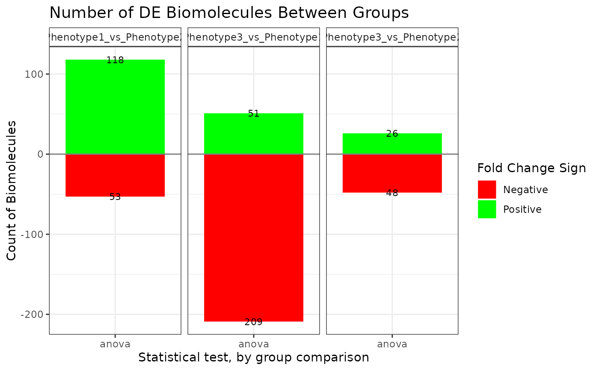
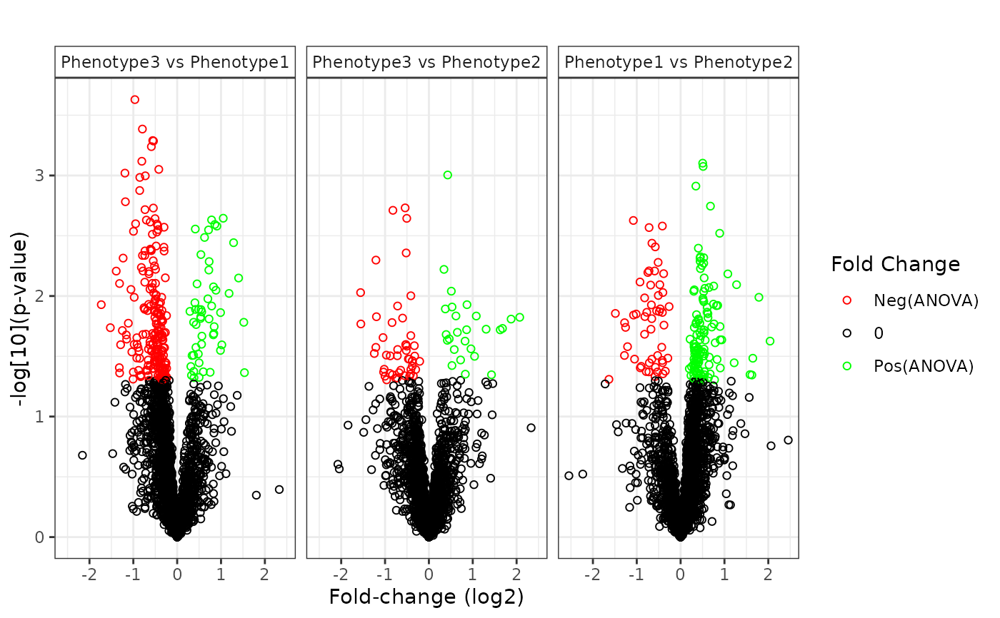
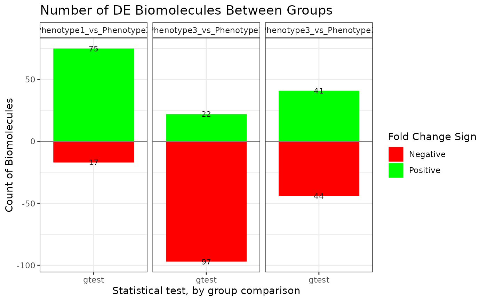
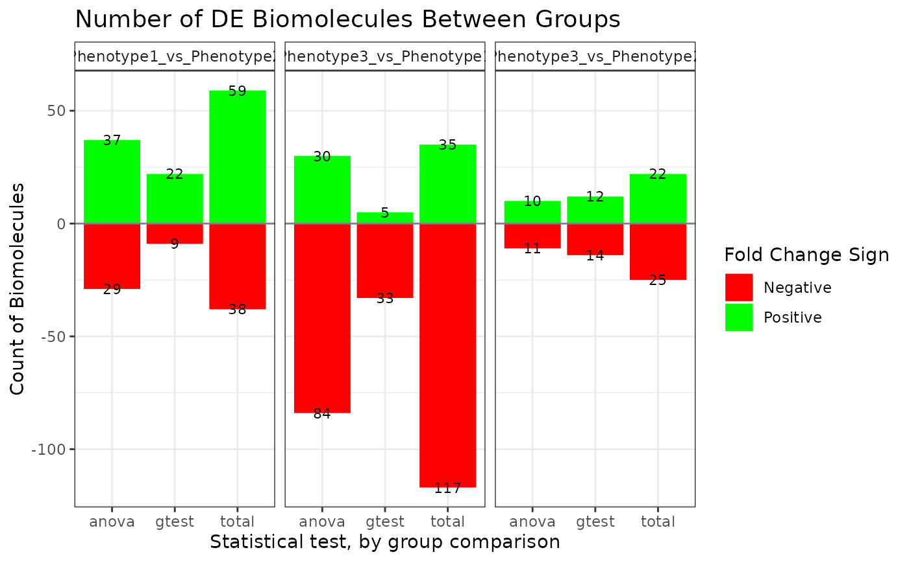
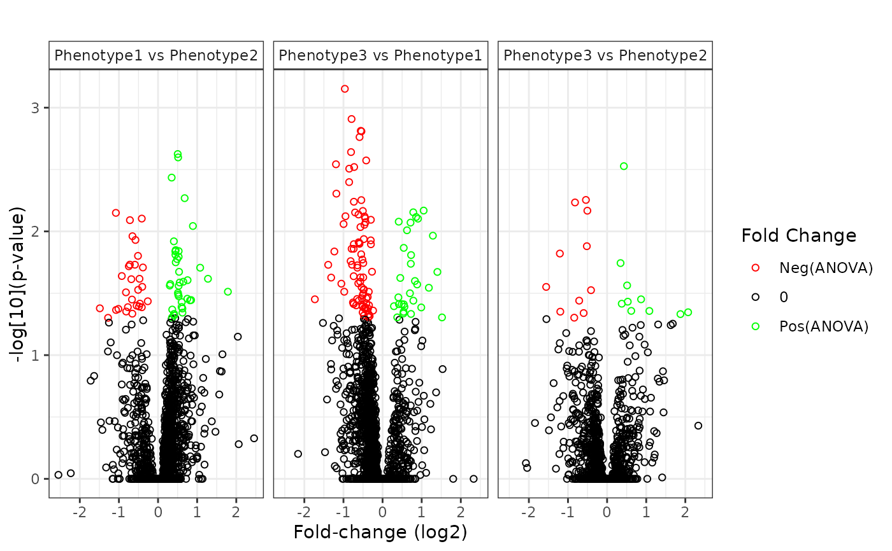

Produces plots that summarize the results contained in a `statRes` object.
# S3 method for statRes
plot(
x,
plot_type = "bar",
fc_threshold = NULL,
fc_colors = c("red", "black", "green"),
stacked = TRUE,
show_sig = TRUE,
color_low = NULL,
color_high = NULL,
plotly_layout = NULL,
interactive = FALSE,
x_lab = NULL,
x_lab_size = 11,
x_lab_angle = NULL,
y_lab = NULL,
y_lab_size = 11,
title_lab = NULL,
title_lab_size = 14,
legend_lab = NULL,
legend_position = "right",
text_size = 3,
bw_theme = TRUE,
display_count = TRUE,
custom_theme = NULL,
cluster = F,
free_y_axis = FALSE
)`statRes` object to be plotted, usually the result of `imd_anova`
defines which plots to be produced, options are "bar", "volcano", "gheatmap", "fcheatmap"; defaults to "bar". See details for plot descriptions.
optional threshold value for fold change estimates.
Modifies the volcano plot as follows: Vertical lines are added at
(+/-)fc_threshold and all observations that have absolute fold
change less than abs(fc_threshold) are colored as 'non-significant'
(as specified by fc_colors).
vector of length three with character color values interpretable by ggplot. i.e. c("orange", "black", "blue") with the values being used to color negative, non-significant, and positive fold changes respectively
TRUE/FALSE for whether to stack positive and negative fold change sections in the barplot, defaults to TRUE
This input is used when plot_type = "gheatmap". A
logical value. If TRUE a visual indicator that a certain bin combination is
significant by the g-test is shown.
This input is used when plot_type = "gheatmap". A
character string specifying the color of the gradient for low count values.
This input is used when plot_type = "gheatmap". A
character string specifying the color of the gradient for high count
values.
This input is used when plot_type = "gheatmap". A
list of arguments, not including the plot, to be passed to
plotly::layout if interactive = TRUE.
TRUE/FALSE for whether to create an interactive plot using plotly. Not valid for all plots.
character string specifying the x-axis label.
integer value indicating the font size for the x-axis. The default is 11.
integer value indicating the angle of x-axis labels.
character string specifying the y-axis label.
integer value indicating the font size for the y-axis. The default is 11.
character string specifying the plot title.
integer value indicating the font size of the plot title. The default is 14.
character string specifying the legend title.
character string specifying the position of the legend. Can be one of "right", "left", "top", "bottom", or "none". The default is "none".
integer specifying the size of the text (number of non-missing values) within the plot. The default is 3.
logical value. If TRUE uses the ggplot2 black and white theme.
logical value. Indicates whether the non-missing counts will be displayed on the bar plot. The default is TRUE.
a ggplot `theme` object to be applied to non-interactive plots, or those converted by plotly::ggplotly().
logical for heatmaps; TRUE will cluster biomolecules on X axis. defaults to TRUE for seqData statistics and FALSE for all others.
Logical. If TRUE the y axis for each bar plot can have its own range. The default is FALSE.
numeric for heatmaps; defaults to NULL.
ggplot2 plot object if interactive is FALSE, or plotly plot object if interactive is TRUE
Plot types:
"bar" ?pmartR::statres_barplot Bar-chart with bar heights
indicating the number of significant biomolecules, grouped by test type and
fold change direction.
"volcano" ?pmartR::statres_volcano_plot Scatter plot showing
negative-log-pvalues against fold change. Colored by statistical
significance and fold change.
"gheatmap" ?pmartR::gtest_heatmap Heatmap with x and y axes
indicating the number of nonmissing values for two groups. Colored by
number of biomolecules that fall into that combination of nonmissing values.
"fcheatmap" Heatmap showing all biomolecules across comparisons, colored by fold change.
library(pmartRdata)
# Group the data by condition
mypro <- group_designation(omicsData = pro_object,
main_effects = c("Phenotype"))
# Apply the IMD ANOVA filter
imdanova_Filt <- imdanova_filter(omicsData = mypro)
mypro <- applyFilt(filter_object = imdanova_Filt,
omicsData = mypro,
min_nonmiss_anova=2)
#> You have specified remove_singleton_groups = TRUE, but there are no singleton groups to remove. Proceeding with application of the IMD-ANOVA filter.
# Implement the IMD ANOVA method and compuate all pairwise comparisons
# (i.e. leave the `comparisons` argument NULL)
anova_res <- imd_anova(omicsData = mypro, test_method = 'anova')
#> Joining with `by = join_by(RazorProtein)`
plot(anova_res)

plot(anova_res, plot_type = "volcano")
#> Warning: Removed 100 rows containing missing values (`geom_point()`).

imd_res <- imd_anova(omicsData = mypro, test_method = 'gtest')
#> Joining with `by = join_by(RazorProtein)`
plot(imd_res)

imd_anova_res <- imd_anova(omicsData = mypro,
test_method = 'comb',
pval_adjust_a_multcomp ='bon',
pval_adjust_g_multcomp = 'bon')
#> Joining with `by = join_by(RazorProtein)`
plot(imd_anova_res, bw_theme = TRUE)

plot(imd_anova_res, plot_type = "volcano", bw_theme = TRUE)
#> Joining with `by = join_by(RazorProtein, Comparison)`
#> Warning: Removed 100 rows containing missing values (`geom_point()`).
